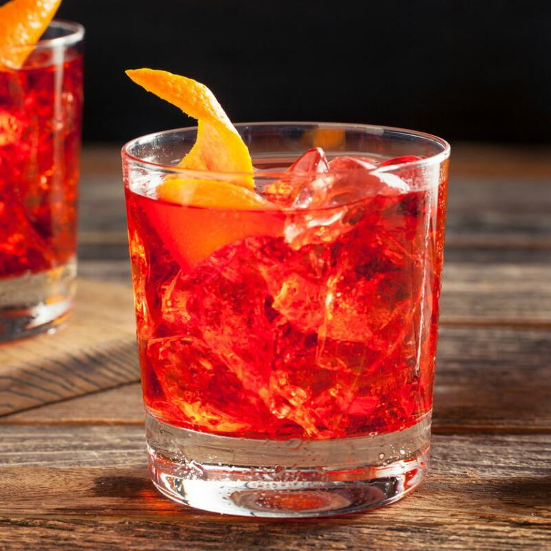

Negroni
De un rojo brillante, simple y sofisticado a la vez, el Negroni es definitivamente para paladares adultos, ya que para muchos es simplemente demasiado amargo.
Ver recetaDe un rojo brillante, simple y sofisticado a la vez, el Negroni es definitivamente para paladares adultos, ya que para muchos es simplemente demasiado amargo.
Ver recetaMezcla el tomate con los sabores algo potentes del tabasco y el vodka. Admite diversas variaciones, pues el picante de la pimienta y del tabasco puede aumentarse o rebajarse siempre a gusto del consumidor.
Ver recetaCombina a la perfección el toque amargo de un café con lo dulce de la canela y la crema batida, ¡delicioso e ideal para la temporada invernal!
Ver recetaLa caipiriña o caipirinha es el coctel más tradicional y conocido de Brasil. Se prepara con una mezcla de limones, azúcar, hielo picado y la infaltable cachaza brasileña.
Ver recetaEl Cuba Libre se puede preparar en un abrir y cerrar de ojos. No hacen falta muchos ingredientes: un buen ron, una bebida cola, limas frescas y pequeños cubitos de hielo. Sin embargo, el sabor puede variar mucho dependiendo de qué tipo de ron y qué bebida cola se utilicen en la preparación.
Ver recetaEn su versión más antigua este cóctel se prepara con ron blanco y zumo de limón, pero hoy en día su gran difusión ha hecho que se puedan encontrar distintos tipos de este combinado. El Daiquiri tiene sus orígenes en Santiago de Cuba, por lo que suele ser preparado con ron cubano.
Ver recetaEs el trago más popular de Argentina, que mezcla el sabor amargo de la bebida originalmente medicinal oriunda de Italia, el Fernet, mezclado con el sabor muy dulce y efervescente de la Coca-Cola.
Ver recetaA pesar de su nombre, no contiene té helado en su receta. El término «Iced Tea» proviene tanto del color ámbar de la mezcla final como de su sabor, ya que una vez mezclados todos sus ingredientes, en boca deja un sabor muy similar a un refresco de té helado.
Ver recetaEl Manhattan es un cóctel clásico a base de whiskey (de centeno o canadiense) y vermut rojo, que se suele tomar como aperitivo.
Ver receta
Tiene matices dulces, salados, picantes y amargos por lo que es perfecto para tomar en el aperitivo y en México también lo beben durante la comida o incluso después de ella para que tenga un efecto digestivo.
Ver recetaUna bebida sofisticada que se bebe dulce, seca o picosita. El martini es una de las bebidas más versátiles que existen, ya que, con su base de ginebra o vodka helados, puede prepararse en versiones que van desde las infusiones de chocolate hasta los sabores a chile y especias.
Ver recetaEl origen de la palabra mojito proviene del condimento o aliño cubano llamado mojo, preparado a base de lima. El hecho es que en Cuba, de ordinario, todos los cocteles se pedían con un poco de mojo y de ahí se dedujo el mojito.
Ver recetaEl Moscow Mule («Mula de Moscú») es un cóctel hecho con vodka, cerveza de jengibre y jugo de lima, adornado con una rodaja de lima. Es un tipo de buck o mule, cócteles a base de lima, ginger ale o ginger beer y alguna bebida alcohólica. Por ello a veces se le llama vodka buck.
Ver receta
Tiene la fuerza y el carácter del Bourbon, el dulzor del azúcar equilibrado por el amargo de angostura y los aromas cítricos de la naranja; que junto a una adecuada dilución lo convierten en una bebida redonda y agradable.
Ver receta
Originaria de Puerto Rico, la Piña colada es la bebida que remite al Caribe por excelencia, un trago y puedes sentir la brisa en la cara y escuchar las olas del mar color turquesa.
Ver recetaEl ponche de pisco es una bebida para valientes, no cualquiera la puede consumir, es un trago refrescante pero fuerte. El color de esta bebida es de un amarillo bastante claro y su sabor es cítrico con un toque dulce.
Ver recetaEs uno de los más populares cócteles de ginebra y uno de los más sencillos de elaborar, pues, a diferencia de la mayoría de combinados, se puede confeccionar sin la necesidad de un vaso mezclador o coctelera.
Ver recetaPara preparar un whisky sour necesitaremos: Bourbon, jugo de limón, azúcar y clara de huevo. La clara de huevo es opcional, pero de agregarla crea esa capa espumosa en la superficie del cocktail.
Ver recetaEsta bebida combina de una manera exótica hojas de menta, limón, azúcar, y por supuesto whisky. Realmente es una versión mentolada del whisky sour.
Ver recetaCombinado de sabor dulce y cremoso. Es sencillo de preparar ya que tiene pocos ingredientes y no necesita mucha elaboración.
Ver receta